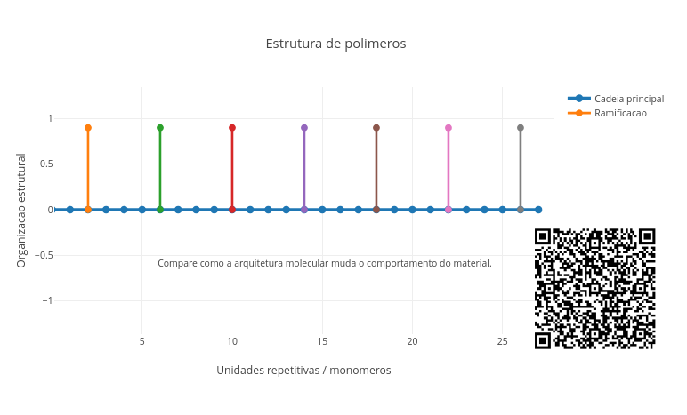
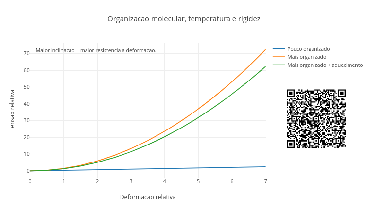
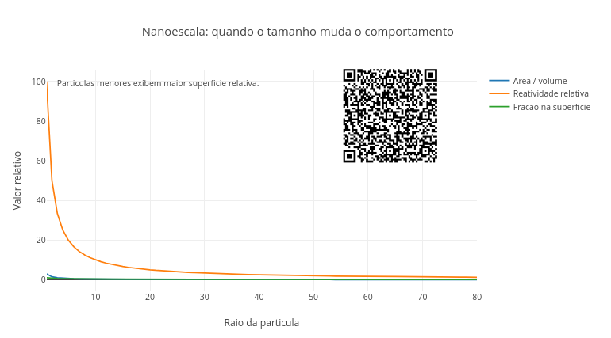
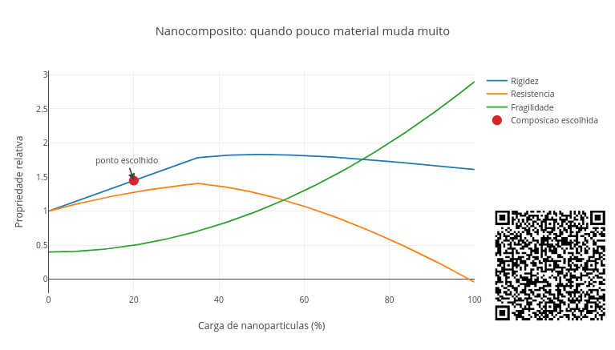

7 Química de Materiais e Nanotecnologia
Olhe ao seu redor. No mundo de hoje, seu celular tem polímeros especiais, sua roupa contém fibras sintéticas, as embalagens conservam alimentos por mais tempo e o sabão em pó e os protetores solares usam nanopartículas. Essa intervenção humana permite controlar a matéria em diferentes escalas: desde a macroscópica, como na produção de plásticos moles ou rígidos, até a nanométrica (bilionésimos de metro). Por outro lado, há substâncias que, embora formadas dos mesmos elementos, exibem comportamentos pra lá de diferentes, como o grafite e o carbono.
Este capítulo visa conectar a estrutura e algumas propriedades químicas com físicas, bem como o comportamento em escala nanométrica resultante, além de apresentar um voo raso pelas tecnologias voltadas para novos materiais, sua aplicação, consumo, impacto ambiental e inovação.
Depois de explorar, você consegue:
- Relacionar a estrutura de polímeros com suas propriedades macroscópicas;
- Interpretar como organização molecular influencia rigidez, flexibilidade e resistência de materiais;
- Explicar o efeito da temperatura sobre a mobilidade molecular e o comportamento mecânico;
- Compreender por que nanopartículas apresentam propriedades diferentes do mesmo material em escala macroscópica;
- Avaliar o papel da dispersão e da interação em nanocompósitos;
- Interpretar gráficos como modelos simplificados de fenômenos físico-químicos;
- Conectar estrutura microscópica com comportamento observado no cotidiano;
- Explorar visualizações interativas com objetos computacionais. 
Como de costume nesse livro, segue um JSPlotly para abertura dos conceitos do capítulo. A ideia do script é simples: construir um polímero, mostrando como pequenas unidades (monômeros) formam grandes cadeias. Bom, “simples” em termos. Fazer isso no laboratório pode levar anos, mas numa simulação…leva menos de um segundo.

O script representa três formas simplificadas de organização de polímeros: linear, ramificada, e reticulada. Cada ponto representa uma unidade repetitiva chamada monômero. Quando muitos monômeros se unem, formam uma cadeia polimérica. A ideia é perceber que polímeros não diferem apenas pela composição química, mas também pela forma como suas cadeias se organizam.
Agite antes de usar
O gráfico resultante é uma representação didática da arquitetura das cadeias, não se comprometendo com a estrutura molecular de qualquer polímero. Cadeias lineares, ramificadas e reticuladas podem produzir materiais com diferentes graus de flexibilidade, resistência, densidade, elasticidade e capacidade de fusão. O comportamento do plástico, por exemplo, começa muito antes de ele virar objeto, quando se escolhe quem serão os seus monômeros.
O script traz três tipos de polímeros: “ramificado”, “linear”, e “reticulado” (ligações cruzadas). Teste cada um deles.
const n = 28;
const tipo = "ramificado";Altere também o número de monômeros $n$ como abaixo, e observe como o tamanho da cadeia e a arquitetura estrutural mudam a aparência do polímero.
const n = 12;Isso significa que a estrutura microscópica de um polímero influencia suas propriedades macroscópicas. Uma cadeia linear tende a ser mais simples e flexível, enquanto que uma cadeia ramificada ocupa mais espaço e pode dificultar o empacotamento das moléculas. Uma estrutura reticulada, por sua vez, forma ligações cruzadas entre cadeias, criando uma rede mais rígida. Por isso, dois materiais feitos de monômeros parecidos podem se comportar de formas muito diferentes. Vai um tutorial rápido para uso do app.
- Rode o script com
tipo = "ramificado"; - Observe a cadeia principal;
- Veja as ramificações laterais;
- Troque para
tipo = "linear"; - Compare a organização;
- Troque para
tipo = "reticulado"; - Observe as ligações cruzadas entre cadeias;
- Aumente
n; - Veja como cadeias maiores tornam a estrutura mais extensa;
- Diminua
n; - Observe como a estrutura fica mais simples.
Com isso, você deve perceber que o material muda mais pela organização de suas cadeias do que pela quantidade de seus monômeros. Contudo, esse é um modelo muito singelo quando comparado com o que ocorre no mundo real. Um polímero pode exibir arranjos estruturais diferentes em função apenas de seu tamanho, em decorrência, por exemplo, das interações que faz com o solvente, como a água. Ainda assim, a simulação permite explorar alguns parâmetros e é certamente mais “lúdica” do que a página estática de um livro. Seguem alguns cenários para exploração do app.
- Cadeia curta. Uma cadeia curta sugere um material mais simples ou menos resistente ?
const n = 10;
const tipo = "linear";Cadeia longa. Mude o valor de
npara 45. Cadeias maiores podem aumentar interações entre moléculas ?Polímero ramificado. Como ramificações podem dificultar o empacotamento das cadeias ?
const n = 28;
const tipo = "ramificado";- Muitas ligações cruzadas. Por que ligações cruzadas podem tornar o material mais rígido ?
const n = 36;
const tipo = "reticulado";- Comparação estrutural. Agora compare o tipo “linear”, “ramificado” e “reticulado”, mas fixando o tamanho em
n= 40. Qual arquitetura parece mais flexível e qual parece mais presa em rede ?
Por dentro do script
O script começa definindo dois controles principais:
const n = 28;
const tipo = "ramificado";O valor n define o número de unidades repetitivas enquanto o valor tipo escolhe a arquitetura do polímero. Quando o tipo é “linear”, o script chama:
cadeiaLinear();Quando é “ramificado”:
cadeiaRamificada();Quando é “reticulado”:
cadeiaReticulada();Cada função constrói uma organização diferente usando pontos e linhas no gráfico. A cadeia linear posiciona os monômeros em sequência. A cadeia ramificada adiciona pequenas ramificações laterais. E a cadeia reticulada desenha duas cadeias conectadas por ligações cruzadas.
No cotidiano, os polímeros estão presentes em sacolas, garrafas, borrachas, tecidos sintéticos, embalagens, tintas, colas, pneus, utensílios domésticos e equipamentos médicos. Essas aplicações variadas dependem da estrutura das cadeias poliméricas, já que, como observado acima, essas macromoléculas mostram como pequenas unidades repetidas podem gerar materiais completamente diferentes.
Mas existem outras propriedades que podem definir quando um polímero é flexível e quando é rígido. Ou por que alguns amolecem com calor enquanto outros mantêm sua forma. Essas características dependem da constituição e organização molecular dos polímeros, e cuja estrutura macroscópica pode variar quando submetida a variações de temperatura. E adivinha ? Essa proposta de estudo está na base do próximo JSPlotly que segue.

O app mostra agora como a organização molecular e a temperatura influenciam o comportamento mecânico de materiais. A forma como as moléculas se organizam e se movimentam define como o material responde a forças. No script, são comparadas situações para um material pouco organizado, outro mais organizado, e outro ainda organizado apenas sob aquecimento. O eixo horizontal representa deformação e o eixo vertical representa tensão (resistência). Curvas mais inclinadas indicam maior resistência, enquanto que curvas mais baixas indicam maior facilidade de deformação.
Agite antes de usar
Execute o script com:
const organizacao = 0.6;
const temperatura = 25;Depois explore as constantes organizacao com valores de 0.2 e 0.9, e temperatura com 80 e 140.
Observe como as curvas mudam, especialmente a do material aquecido, e perceba que alguns materiais são rígidos, enquanto outros se deformam facilmente com o aumento da temperatura. De fato, quando as cadeias estão pouco organizadas, elas deslizam mais facilmente e o material deforma com menor resistência. Mas quando estão mais organizadas, elas interagem mais fortemente, resistindo mais à deformação. Ao serem submetidas a temperaturas mais elevadas, as moléculas vibram mais, a estrutura se torna mais móvel, e a resistência diminui.
Siga essas instruções para aproveitar o app:
- Rode o script.
- Observe as três curvas;
- Compare “pouco organizado” vs “mais organizado”;
- Veja qual resiste mais à deformação;
- Aumente
organizacao; - Observe o aumento da inclinação;
- Aumente
temperatura; - Veja a queda da curva aquecida;
- Compare frio X quente;
- Teste valores extremos (0.1 e 0.9).
Perceba que um material é rígido por causa de sua estrutura e também da temperatura. Agora explore alguns cenários:
- Material desorganizado. Por que materiais pouco organizados deformam facilmente ?
const organizacao = 0.1;
const temperatura = 25;- Material altamente organizado. Por que uma maior organização aumenta a resistência ?
const organizacao = 0.95;
const temperatura = 25;- Aquecimento moderado. O material começa a perder rigidez gradualmente ?
const temperatura = 70;Aquecimento intenso. Mude a temperatura para 150\(^o\)C. Por que muitos polímeros amolecem com o calor ?
Organização alta e calor. Mesmo materiais organizados perdem resistência com temperatura ?
const organizacao = 0.9;
const temperatura = 120;- Comparação direta. Teste a constante de organização com 0.2 e 0.8. Qual curva representa um material mais rígido ?
Após avaliar esses cenários, você deve ter percebido que a estrutura fortalece enquanto a temperatura enfraquece. Esse comportamento aparece em muitos materiais do cotidiano, como plásticos que amolecem ao aquecer, borrachas que ficam mais flexíveis, materiais industriais que perdem resistência térmica e polímeros que podem ser moldados com calor. Portanto, para que a engenharia de materiais projete um polímero com propriedades desejadas, é necessário controlar sua organização molecular sob temperatura.
Por dentro do script
O script começa com dois parâmetros principais:
const organizacao = 0.6;
const temperatura = 25;Depois define o eixo de deformação:
let d = i / 10;A influência da temperatura aparece aqui:
let efeitoTemp = Math.max(0.15, 1 - temperatura / 180);Quanto maior a temperatura, menor o valor, simulando perda de rigidez. Em seguida, três comportamentos são definidos:
- Material pouco organizado (quase linear):
materialPoucoOrganizado.push(0.35 * d);- Material organizado (crescimento mais acentuado):
materialOrganizado.push((0.4 + 1.8 * organizacao) * d * d);- Material organizado aquecido:
materialAquecido.push((0.4 + 1.8 * organizacao) * efeitoTemp * d * d);Assim, o script compara diretamente estrutura e temperatura.
Nanopartículas
E quando a estrutura possui um tamanho tão pequeno que sequer pode ser vista a olho nu? Bom, estruturas que não são visíveis devido ao seu tamanho reduzido geralmente podem ser observadas em um microscópio óptico. Esse instrumento de ampliação consegue “enxergar” as coisas em escala micro ou seja 1x10$^{-6} metros, ou um milionésimo do metro. Nessa escala estão os micróbios e as células de plantas e animais, daí o poder de estudo desse instrumento. Mas o que dizer de estruturas mil vezes menores ? Aí nem o microscópio óptico “dá conta do recado” !
São essas estruturas que estão na escala nanométrica, ou 1x10$^{-9} metros, ou um bilionésimo do metro. São tão pequenas que seu comportamento muda frente às soluções e mesmo à luz. Apesar de muito pequeninas, são empregadas hoje num extenso ramo de aplicações nanotecnológicas, e que vão desde a criação de novos materiais em Química, Engenharias e Biotecnologia (nanopartículas, nanocompósitos) até a intervenção clínica em seres humnos (nanomedicina). E é aqui que entra um novo JSPlotly, ansioso para te ajudar a entender um pouco mais dessas minúsculas estruturas químicas.

O script mostra que partículas muito pequenas podem se comportar de forma completamente diferente dos mesmos materiais em tamanho macroscópico, focando em tamanho da partícula, área superficial e reatividade química. Quando o tamanho diminui, aumenta a proporção de átomos expostos na superfície, e isso altera propriedades químicas, físicas e catalíticas (“quebra” acelerada de compostos). De fato, nanopartículas respondem de modo diferente de suas irmãs macroscópicas junto ao campo elétrico, magnético, à luz, e reatividade química.
Agite antes de usar
Execute o script com o raio máximo da partícula num determinado valor:
const rMax = 80;Depois reduza para rMax = 20 (raio máximo), e então aumente para rMax = 200. Observe o comportamento da região de partículas muito pequenas, e compare como as curvas mudam rapidamente quando o raio diminui. E perceba que nanopartículas podem ser mais reativas do que partículas grandes feitas do mesmo material, porque possuem uma área de contato maior quando comparada a essas.
Quando uma partícula diminui seu tamanho, seu volume diminui rapidamente, mas sua superfície relativa aumenta. Isso significa que uma fração maior dos átomos fica exposta, interagindo mais facilmente com o ambiente. Por isso, nanopartículas frequentemente apresentam maior reatividade, melhor ação catalítica (aceleração de reações), propriedades ópticas diferentes e maior eficiência em sensores e materiais funcionais.
Essa relação de área superficial não é tão difícil de entender. Pense numa nanopartícula em forma de bolinha. A área de um círculo é dada por:
\[ A = \pi r^2 \text{, r=raio} \tag{7.1}\]
Agora compare com a área de superfície de uma esfera (bolinha):
\[ A = 4\pi r^2 \tag{7.2}\]
Note que a área superficial de uma esfera é quatro vezes maior que a área de seu círculo central. Se reduzirmos o tamanho das esferas mantendo a mesma massa total, a área de contato combinada aumentará significativamente. Esse é um efeito de escala que ocorre quando se pulveriza algo, levando ao aumento de sua área de contato para interação.
Como o volume total de matéria não muda, quando você reduz o raio \(r\) das bolinhas, o número de bolinhas aumenta de forma cúbica. Isso faz com que a área de contato total cresça de forma inversamente proporcional ao raio. Por isso, dividir o raio por 2 duplica em 2 vezes a área de contato total.
Use o app para entender melhor o que foi dito acima, seguindo essas instruções:
- Rode o script com
rMax = 80; - Observe as três curvas;
- Compare partículas pequenas e grandes;
- Veja como a razão área/volume muda rapidamente;
- Observe a curva de reatividade relativa;
- Reduza
rMax; - Foque na região de pequenas partículas;
- Agora aumente
rMax; - Compare a região macroscópica;
- Observe como partículas muito pequenas apresentam comportamento mais extremo.
O eixo horizontal do gráfico representa o raio da partícula, enquanto o eixo vertical mostra grandezas relativas associadas à nanoescala. Observe que o material muda porque seu tamanho é que mudou, e não sua composição. Seguem alguns cenários para você experimentar o “nanomundo”:
- Região nanométrica. Por que partículas muito pequenas apresentam tanta superfície relativa ?
const rMax = 15;Escala intermediária. Aumente para 60. O efeito da nanoescala continua importante em partículas maiores ?
Escala macroscópica. Agora vá para 250. Por que partículas grandes apresentam menor influência superficial relativa ?
Comparação direta. Compare
rMaxcom valores de 10 com 200. Como a região inicial do gráfico domina o comportamento na nanoescala ?Foco na reatividade. Por que nanopartículas costumam ser eficientes como catalisadores ?
reatividade- Foco na superfície. O que acontece quando grande parte dos átomos passa a ficar exposta na superfície ?
Observe principalmente:
fracaoSuperficieAs curvas diminuem rapidamente porque partículas maiores possuem menos superfície relativa, enquanto que partículas pequenas possuem proporção superficial muito maior, passando a comandar o comportamento do material.
Por dentro do script
O script começa definindo o tamanho máximo das partículas:
const rMax = 80;Depois percorre vários valores de raio:
for (let r = 1; r <= rMax; r++)Em seguida calcula relações simplificadas associadas à nanoescala.
A relação área/volume:
areaVolume.push(3 / r);Essa relação deve-se ao volume de uma esfera e que é representado por:
\[ V = \frac{4}{3} \pi r^3 \tag{7.3}\]
Então, uma estimativa relativa de reatividade é dada por:
reatividade.push(100 / r);E uma aproximação da fração de átomos na superfície:
fracaoSuperficie.push(1 / Math.sqrt(r));Mesmo que não a percebamos, a Nanotecnologia aparece no dia-a-dia em um sem-número de aplicações. É assim com catalisadores, protetores solares, sensores, baterias, eletrônica, materiais antibacterianos, cosmética, tintas, medicina, e armazenamento de energia, só para citar alguns. Muitas dessas aplicações existem porque nanopartículas possuem propriedades diferentes do mesmo material em escala macroscópica. Assim, a nanotecnologia depende da composição química, mas depende também do tamanho das partículas envolvidas.
Nanocompósitos
Um dos materiais nanotecnológicos bastante empregados hoje em dia é o nanocompósito. Ele aparece em embalagens, peças automotivas, materiais esportivos, tintas, sensores, eletrônicos, próteses, baterias e materiais aeroespaciais. Nanocompósitos são misturas de materiais feitos com polímeros, cerâmicas ou metais, e que são reforçados com nanopartículas. Daí se obtém propriedades que agregam valor às dos materiais convencionais, como maior resistência mecânica, leveza, condutividade elétrica, transparência óptica e propriedades de barreira (proteção contra oxigênio, umidade, luz e aromas, por exemplo).
O desafio da engenharia de materiais na produção de um nanocompósito está em controlar a mistura que o produz. Uma distribuição ruim, excesso de carga ou baixa interação podem transformar uma boa ideia para um material em um material problemático.
O script de JSPlotly abaixo busca ajudar você a compreender um pouco mais sobre o comportamento de nanocompósitos.

O script simula propriedades de um nanocompósito, isto é, um material formado pela mistura entre uma matriz principal e uma pequena quantidade de nanopartículas. A ideia é mostrar que adicionar nanopartículas pode alterar propriedades como rigidez, resistência e fragilidade de um material. Entretanto, essa adição não significa que mais nanopartículas possam melhorar o material. Se houver um excesso de carga, má dispersão ou pouca interação com a matriz, o material pode se tornar mais frágil.
Agite antes de usar
Execute o script com:
const cargaNano = 20;
const dispersao = 0.7;
const interacao = 0.8;Veja que há 3 características para definir o nanocompósito: a carga, a dispersão, e a interação. Após rodar o app com os valores padrão, altere a carga de nanopartículas para 5, 30, e 70 (cargaNano).
Depois, compare a dispersao para valores de 0.3 e 0.9. Por fim, compare também a interacao, usando valores de 0.2 e 1.0. Observe quando o material melhora e quando começa a perder desempenho. E veja que uma pequena quantidade de nanopartículas pode melhorar muito um material, mas o excesso pode atrapalhar.
Isso ocorre porque nanopartículas possuem grande área superficial relativa, como visto acima no capítulo. Isso permite muitas interações com a matriz do material. Quando elas estão bem dispersas, podem reforçar a estrutura, mas quando estão em excesso ou mal distribuídas, podem formar aglomerados, resultando em pontos frágeis no material. Por isso, fabricar um bom nanocompósito envolve encontrar um equilíbrio entre quantidade, dispersão e interação, e não apenas “colocar mais nanopartícula”. Observe isso seguindo as instruções abaixo.
- Rode o script com os valores originais;
- Observe as três curvas;
- Veja o ponto da composição escolhida;
- Aumente
cargaNano; - Observe se rigidez, resistência e fragilidade crescem do mesmo modo;
- Diminua
dispersao; - Veja como uma má distribuição reduz o ganho do material;
- Aumente
interacao; - Observe se o reforço fica mais eficiente;
- Compare cargas baixas, médias e altas.
Veja qual combinação produz reforço sem transformar o material em algo frágil demais. Alguns cenários sobre o app para você sedimentar essas ideias:
- Baixa carga de nanopartículas. Uma pequena quantidade já altera o material ?
const cargaNano = 5;Carga intermediária. Altera a carga para 25. Existe uma região em que o reforço parece mais vantajoso ?
Excesso de nanopartículas. Agora altere para 80. Por que muita carga pode aumentar a fragilidade ?
Má dispersão. O que acontece quando as nanopartículas ficam mal distribuídas ?
const dispersao = 0.2;Boa dispersão. Mude a
dispersaopara 0.95. Por que partículas bem espalhadas reforçam melhor o material ?Pouca interação com a matriz. Agora altere para 0.2. Nanopartículas ajudam se não interagem bem com o material ao redor ?
Forte interação com a matriz. Boa interação pode aumentar o efeito de reforço mesmo com pouca carga ?
const interacao = 1.0;O gráfico mostra que as propriedades do nanocompósito não crescem todas do mesmo jeito. A rigidez tende a aumentar com o reforço, enquanto que a resistência pode melhorar até certo ponto, mas depois cair. E a fragilidade cresce com excesso de carga, também, mostrando que a quantidade de nanopartícula adicionada não resulta num material melhor. É preciso equilibrar desempenho, estabilidade, flexibilidade e resistência.
Por dentro do script
O script começa com três parâmetros principais:
const cargaNano = 20;
const dispersao = 0.7;
const interacao = 0.8;A variável cargaNano indica a porcentagem de nanopartículas escolhida. A variável dispersao representa o quanto essas partículas estão bem distribuídas no material. E a variável interacao representa o quanto elas interagem com a matriz. Depois, o script percorre cargas de 0% a 100%:
for (let i = 0; i <= 100; i++) {A carga é convertida em fração:
let nano = porcentagem / 100;O efeito da dispersão diminui quando a carga fica muito alta:
let efeitoDispersao = dispersao * Math.exp(-2 * Math.max(0, nano - 0.35));Isso representa a ideia de que, acima de certo ponto, as nanopartículas podem se aglomerar. Depois o script calcula o efeito de reforço:
let efeitoInteracao = interacao * nano * efeitoDispersao;A partir disso, são simuladas três propriedades:
rigidez.push(1 + 4 * efeitoInteracao);
resistencia.push(1 + 3 * efeitoInteracao - 1.5 * nano * nano);
fragilidade.push(0.4 + 2.5 * nano * nano);À despeito da enorme simplificação das relações matemáticas contidas no script, e voltadas apenas para a compreensão qualitativa entre suas variáveis, o gráfico mostra que melhorar um material exige equilíbrio.
Com questões das Ciências puras e da Engenharia de Materiais, agora é hora de ir além. Além do senso comum também e, quem sabe, além até do bom senso !
- E se dois materiais feitos praticamente dos mesmos átomos apresentassem propriedades completamente diferentes apenas por causa da organização das cadeias ?
- E se um plástico rígido pudesse se tornar flexível apenas mudando a temperatura ?
- E se a estrutura microscópica de um material fosse mais importante do que sua aparência macroscópica ?
- E se aumentar algumas ligações cruzadas fosse suficiente para transformar um material mole em algo extremamente resistente ?
- E se o comportamento de um material dependesse mais da mobilidade molecular do que de sua composição química ?
- E se cadeias poliméricas fossem organizadas como redes vivas capazes de responder ao ambiente ?
- E se materiais do futuro mudassem de rigidez automaticamente com temperatura, pressão ou luz ?
- E se um polímero pudesse “memorizar” uma forma e depois recuperá-la sozinho ?
- E se nanopartículas fossem tão pequenas que grande parte dos átomos estivesse exposta na superfície ?
- E se diminuir o tamanho de uma partícula mudasse completamente sua reatividade química ?
- E se ouro nanoparticulado tivesse cores diferentes do ouro macroscópico ?
- E se materiais invisíveis a olho nu fossem capazes de alterar propriedades enormes em objetos cotidianos ?
- E se uma quantidade minúscula de nanopartículas pudesse mudar drasticamente a resistência de um material ?
- E se o excesso de nanopartículas piorasse o material em vez de melhorá-lo ?
- E se materiais do cotidiano fossem projetados átomo por átomo no futuro ?
- E se roupas, embalagens ou celulares utilizassem materiais capazes de se reorganizar sozinhos ?
- E se superfícies artificiais imitassem folhas de plantas, asas de insetos ou pele de animais ?
- E se materiais inspirados em teias de aranha ou conchas fossem produzidos artificialmente ?
- E se fosse possível fabricar materiais extremamente leves, mas mais resistentes que o aço ?
- E se materiais inteligentes detectassem rachaduras antes mesmo de quebrarem ?
- E se nanopartículas médicas encontrassem células doentes dentro do corpo ?
- E se catalisadores nanométricos reduzissem drasticamente o desperdício de energia em processos industriais ?
- E se materiais mudassem de cor dependendo da iluminação ou da temperatura ?
- E se a nanotecnologia transformasse não apenas objetos, mas também medicina, energia e computação ?
- E se materiais fossem projetados para responder ao ambiente quase como organismos vivos ?
- E se o futuro da engenharia estivesse menos em “mais matéria” e mais em “melhor organização da matéria” ?
- E se o comportamento extraordinário de muitos materiais viesse justamente de estruturas invisíveis aos nossos olhos ?
- E se o mundo macroscópico fosse profundamente controlado por fenômenos microscópicos ?
- E se a verdadeira revolução dos materiais estivesse acontecendo justamente em escalas que não conseguimos enxergar, nem mesmo a nanoescala ?
A lógica explorada nesse capítulo de que a estrutura define comportamentos aparece em muitos outros contextos, não sendo exclusiva da Química de Materiais. Em diferentes áreas do conhecimento, a forma como elementos estão organizados influencia diretamente o que eles fazem. Na Biologia, por exemplo, a forma tridimensional de uma proteína determina sua função. Se for uma enzima, define mesmo suas propriedades catalíticas. Pequenas mudanças na estrutura podem alterar completamente sua atividade. O mesmo ocorre em células, tecidos e organismos, e nos quais a organização interna define como o sistema responde ao ambiente.
Na Física, a organização dos átomos em um sólido define propriedades como condução elétrica, dureza e magnetismo. Em Geologia, a estrutura cristalina dos minerais determina resistência e comportamento mecânico. Assim como nos polímeros e nanocompósitos, não é apenas a composição, mas a arquitetura interna que importa.
Na Matemática e na Computação, esse padrão também aparece. Redes, matrizes e grafos (modelos matemáticos que definem objetos por vértices e arestas) mostram como conexões locais produzem comportamentos globais. Em ciência de dados, que trabalha com estatística, matemática e computação para extrair informações de grandes volumes de dados, pequenas variações em parâmetros podem gerar resultados completamente diferentes. O que muda não é apenas o sistema, mas a forma como suas partes interagem.
Na Engenharia e na Tecnologia, materiais podem ser projetados ajustando organização molecular, tamanho de partículas e interações internas. O mesmo raciocínio aparece em Eletrônica, Biotecnologia e Inteligência Artificial. Em todos esses mundos, controlar a estrutura permite controlar o comportamento.
Nessa seção, damos sequência a um aprendizado panorâmico em JavaScript, voltado ou não à edição de objetos com JSPlotly, como realizado no capítulo anterior. Nesse sentido, segue um pouco sobre a estrutura de JS para aritmética e arrays (vetores).
E agora um truque bem bacana !!! Você poderá treinar a linguagem JavaScript utilizando um JSPlotly específico para isso !. Esse JSPlotly personalizado está disponível na Figura 10.22 que segue. Abra-o num navegador e deixe-o quietinho lá. *Quando quiser rodar algum trecho desses treinamentos, basta copiar, colar o trecho no campo "ÁREA PARA DIGITAR COMANDOS", e rodá-lo*. Muito legal, não ?!

Aritmética
Diversas operações matemáticas são possíveis, quer pelo JS puro, quer pela instalação de bibliotecas específicas, tais como Plotly.js utilizada no JSPlotly, mathjs ou numjs. Segue abaixo uma lista de operações aritméticas realizadas com a linguagem:
- + : adição de números ou concatenação de texto (strings);
- - : subtração;
- * : multiplicação;
- / : divisão;
- % : módulo;
- ++ : incremento de valor;
- -- : decremento;
- ** : exponenciação.
Obs: o operador de módulo *%* divide o primeiro operando pelo segundo operando e retorna o resto.
Os exemplos a seguir ilustram o uso desses operadores aritméticos, bem como de algumas constantes matemáticas. Para testá-los, cole no JSPlotly customizado para treinamento de JS, como informado acima. Você pode experimentá-los separadamente ou em bloco.
let resultado = 0;
resultado = 5 + 3; print("5 + 3 = ", resultado); // 8
resultado = 10 - 4; print("10 - 4 = ", resultado); // 6
resultado = 6 * 7; print("6 * 7 = ", resultado); // 42
resultado = 20 / 5; print("20 / 5 = ", resultado); // 4
resultado = 17 % 3; print("17 % 3 = ", resultado); // 2
resultado = 2 ** 3; print("2 ** 3 = ", resultado); // 8
let contador = 5; contador++; print("contador++ = ", contador); // 6
let decrementar = 8; decrementar--;print("decrementar-- = ", decrementar); // 7
let soma = 10; soma += 5; print("soma += 5 = ", soma); // 15
let diferenca = 20; diferenca -= 7;print("diferença -= 7 = ", diferenca); // 13
let produto = 3; produto *= 4; print("produto *= 4 = ", produto); // 12
let quociente = 24; quociente /= 3;print("quociente /= 3 = ", quociente); // 8
resultado = Math.sqrt(25); print("sqrt(25) = ", resultado); // 5
resultado = Math.abs(-15); print("abs(-15) = ", resultado); // 15
resultado = Math.floor(7.8); print("floor(7.8) = ", resultado); // 7
resultado = Math.ceil(7.2); print("ceil(7.2) = ", resultado); // 8
resultado = Math.round(9.4); print("round(9.4) = ", resultado); // 9
resultado = Math.max(42, 27); print("max(42,27) = ", resultado); // 42
resultado = Math.min(42, 27); print("min(42,27) = ", resultado); // 27
resultado = Math.sin(Math.PI/2); print("sin(π/2) = ", resultado); Arrays
Um array em JavaScript representa uma estrutura de dados para armazenamento de elementos ordenados. Esses elementos podem envolver qualquer tipo de dado, como números, strings (termos), objetos, etc. Na prática, um array pode ser criado, acessado, filtrado, ou mapeado. Seguem exemplos:
Criação
const numeros = [1, 2, 3, 4, 5];
const cores = ['vermelho', 'verde', 'azul'];Acesso
print(numeros[0]);
print(cores[2]);Ou seja, para você acessar o array numeros, por exemplo, basta colar e rodar o seguinte trecho no JSPlotly de treinamento:
const numeros = [1, 2, 3, 4, 5];
const cores = ['vermelho', 'verde', 'azul'];
print(numeros[0]);Mapeamento (map)
const numeros = [1, 2, 3, 4, 5];
const quadrados = numeros.map(numero => numero * numero);
print(quadrados);Uma palavrinha sobre métodos
Observe que, diferente do que já foi explicitado, agora aparece um comando múltiplo, como “numeros.map”. Existe uma infinidade de comandos com esta sintaxe em JS. Ele representa a função que será aplicada a cada elemento do array numeros pelo método map. Além disso, surge a sintaxe “=>” ou sintaxe de arrow function (função de seta), uma forma concisa de atribuir um mapeamento.
Em JavaScript, objetos são tratados como no mundo real, ou seja, possuem atributos e comportamentos. Atributos descrevem as características que um objeto possui, e os comportamentos as ações que podem realizar. A notação em JS para referenciar as propriedades de um objeto pode ser, alternativamente:
objeto.propriedade
...ou...
objeto[propriedade]numeros.map) é chamado no array numeros (um Array.prototype). O *protótipo* permite transmitir propriedades e métodos para um objeto JS. No caso, o método map() itera sobre cada elemento do array original (refinamento por ações sucessivas para aproximar um resultado desejado), aplica uma função a cada um deles e retorna um novo array com os resultados. Assim, numero => numero numero* é a função de seta. E nesse caso, numero é o parâmetro de entrada da função, um atalho para o elemento atual do array sendo processado pelo map. Em adição, “=>” representa o separador entre o(s) parâmetro(s) e o corpo da função. Finalmente, “numero * numero” é a expressão que é executada, com o resultado sendo retornado pela função. Seguem outros exemplos para arrays e mapeamento: const x = [0, 1, 2, 3, 4];
const y = x.map(valor => Math.pow(2, valor))
print(y);const Vmax = 100;
const Km = 10;
const S_values = Array.from({length: 10}, (_, i) => i * 5);
const V_values = S_values.map(S => (Vmax * S) / (Km + S));
print("Valores de S:", S_values);
print("Valores de V:", V_values);JavaScript, uma linguagem orientada a objetos
Objetos, propriedades, e métodos
const ponto = { x: 2, y: 5 }; // objeto com duas propriedadesAssim, as propriedades são as características do objeto:
print(ponto.x); // mostra 2
print(ponto.y); // mostra 5
const carro = {
marca: "Toyota", // propriedade (dado)
ano: 2022, // propriedade
ligar: function() { // método (ação)
console.log("O carro está ligado!");
}
};
carro.ligar(); // chama o método
console.log(carro.marca); // acessa a propriedadeReforçando (não custa nada…), um objeto JavaScript envolve uma coleção de propriedades, onde cada propriedade é definida por um par chave-valor, permitindo uma representação ordenada de elementos. Objetos podem conter diferentes tipos de dados como valores, números, strings, booleanos (falso/verdadeiro), arrays, outras funções e até mesmo outros objetos. Objetos criados são facilmente acessados por seus atributos. Seguem exemplos para testes.
Criação
const pessoa = {
nome: 'João',
idade: 30,
cidade: 'São Paulo'
};Acesso
print(pessoa.nome);
print(pessoa['idade']);Atributos
pessoa.profissao = 'Engenheiro';
print(pessoa);Para um exemplo fechado de objetos:
let pessoa = {
nome: "João",
idade: 30,
profissao: "Desenvolvedor",
hobbies: ["leitura", "música", "jogos"],
endereco: {
rua: "Rua Principal, 123",
cidade: "São Paulo",
},
saudacao: function () {
print("Olá, meu nome é " + this.nome);
},
};
print(pessoa.nome); // Saída: "João"
print(pessoa.hobbies[0]); // Saída: "leitura"
pessoa.saudacao(); // Saída: "Olá, meu nome é João"E por aí vai !! No próximo capítulo esse seção irá explorar um pouco sobre variáveis e funções em JavaScript.